A AML Consulting é uma empresa focada em prevenção e combate à lavagem de dinheiro, analisando transações financeiras e denunciando os suspeitos ao órgão responsável.
No meio disso, é necessário cuidar de toda a infraestrutura empresarial que sustenta os sistemas e analistas de prevenção à lavagem de dinheiro.
Portanto, no trabalho com a AML, as tarefas aqui contidas se dividiram em 3 projetos: o site da empresa e suas comunicações, seu CRM e seu sistema de obtenção de notícias.
AML's website and communications
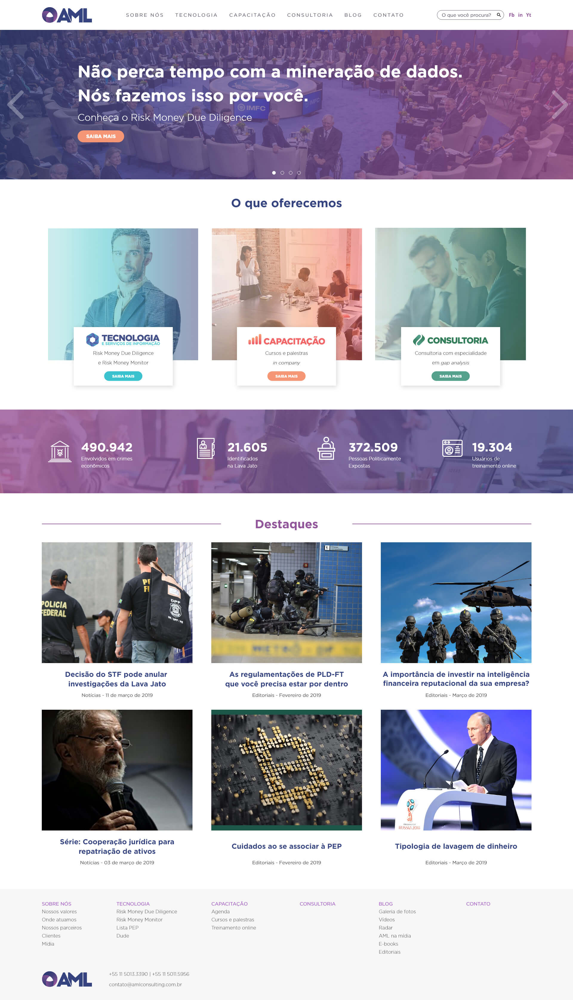
Essa é a versão atual - no momento da construção desse projeto - da homepage da AML Consulting, requisitada para que tivesse uma variedade entre a aparência de venda de um produto com a exibição de notícias relevantes para a área de prevenção à lavagem de dinheiro.
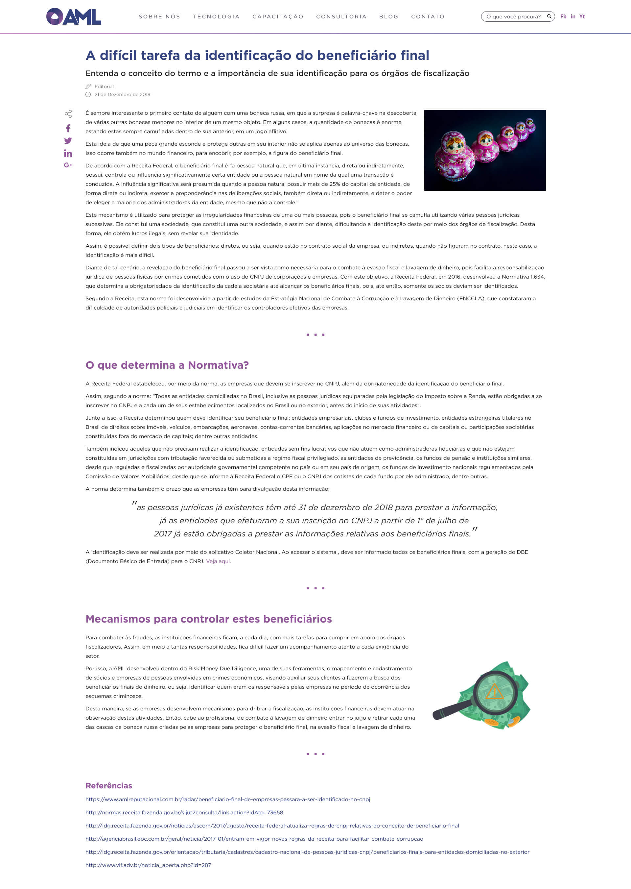
Considerando a necessidade da AML Consulting em ter notícias como uma parte focal de seu site, foi necessário construir uma página de blog, seja para notícias ou textos de opinião.
Seguindo essa linha, precisávamos de uma seção para contato dos clientes com a empresa.
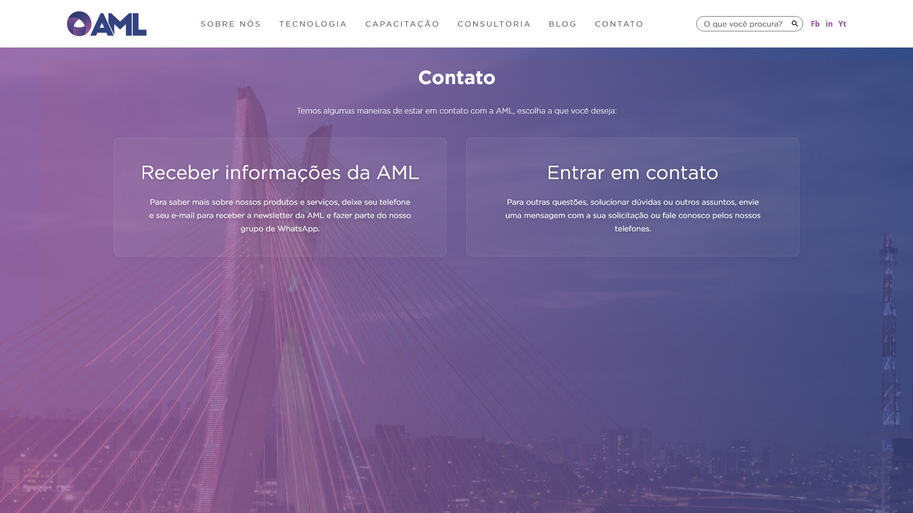
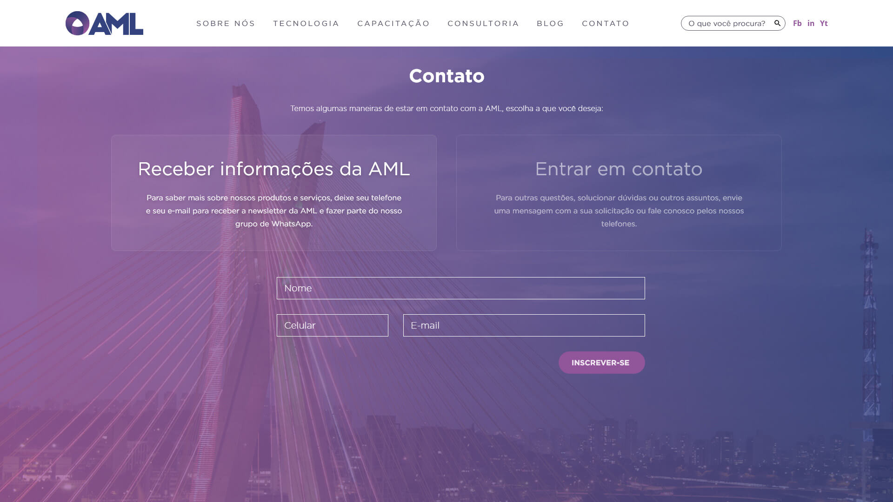

Também foi requisitada uma retrospectiva das notícias do ano.
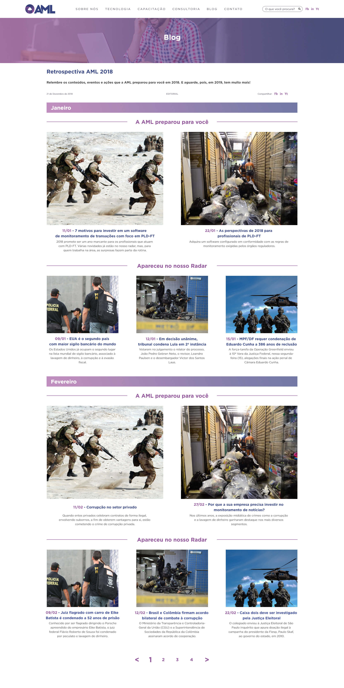
Assim como o projeto e implementação de uma newsletter.
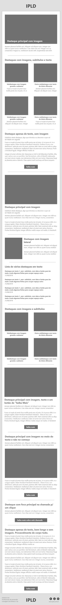
AML's CRM
Tela de login do CRM interno da AML Consulting
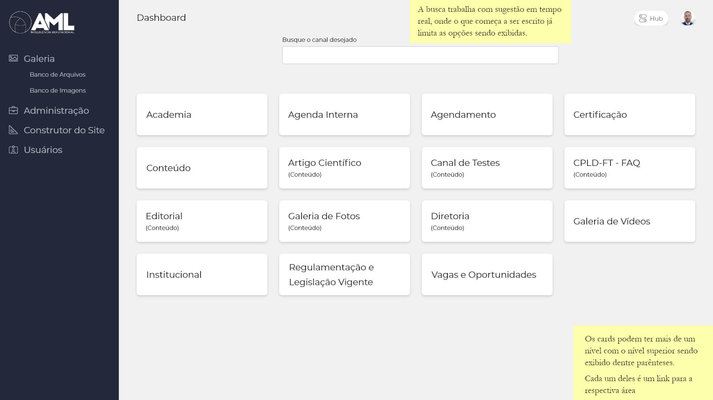
No wireframe da dashboard do CRM, a tela para qual o usuário é redirecionado assim que faz o login, temos atalhos para todas as principais áreas do sistema.
Assim como algumas anotações (em português) sobre o funcionamento do campo de busca com sugestão em tempo real e sobre cards nivelados em duas camadas.
A listagem de associados inscritos em um evento, juntamente com informações de andamento de processo em vários passos, onde todas as principais informações são exibidas de uma vez.
Na anotação temos que as ações secundárias sobre a pessoa, como edição e exclusão, são acessíveis clicando sobre a linha correspondente.
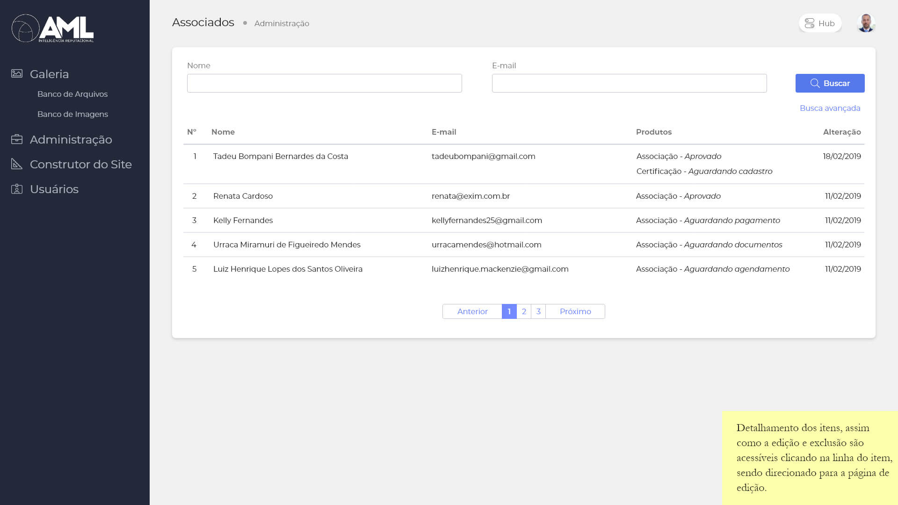
Temos também uma tela de formulário padrão, exibindo vários tipos possíveis de inserção de dados.
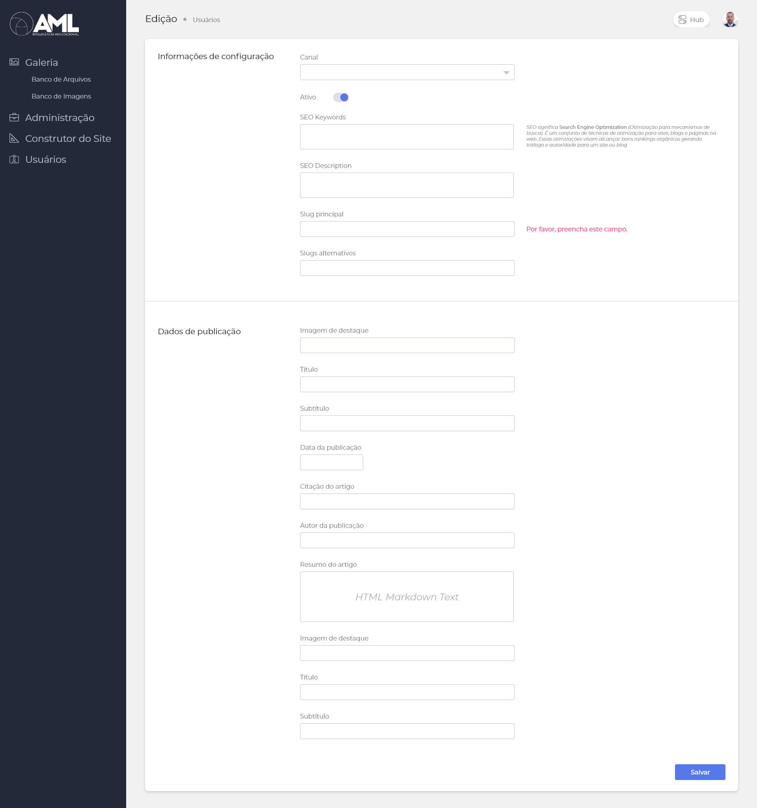
Temos abaixo um exemplo sobre o Banco de Imagens do sistema, buscando exibir uma prévia da imagem, assim como informações de título e data de inserção no sistema.
Buscando oferecer também algumas ações básicas e rápidas, como: copiar o link da imagem, editar informações sobre ela e excluí-la do Banco de Imagens.
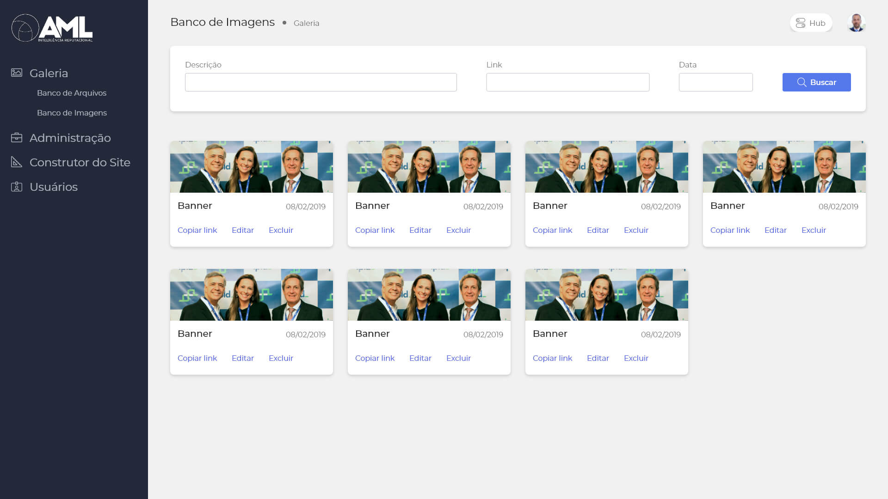
Por fim, a exibição de uma outra tela de formulário, exibindo o funcionamento de um dropdown e mostrando os itens de drag-and-drop presentes em cinza no formulário.
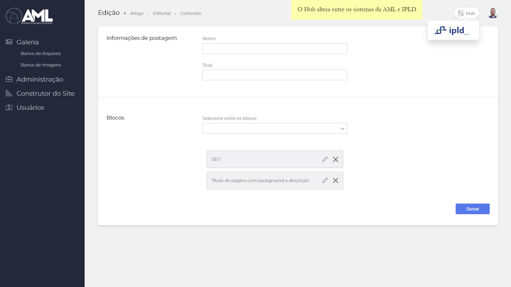